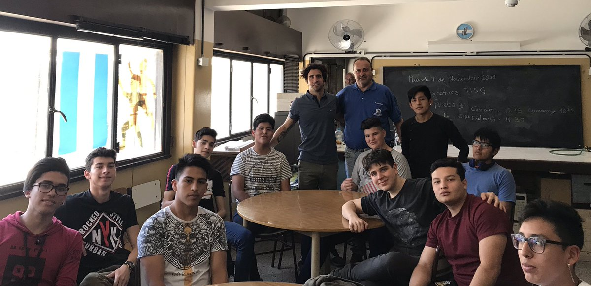
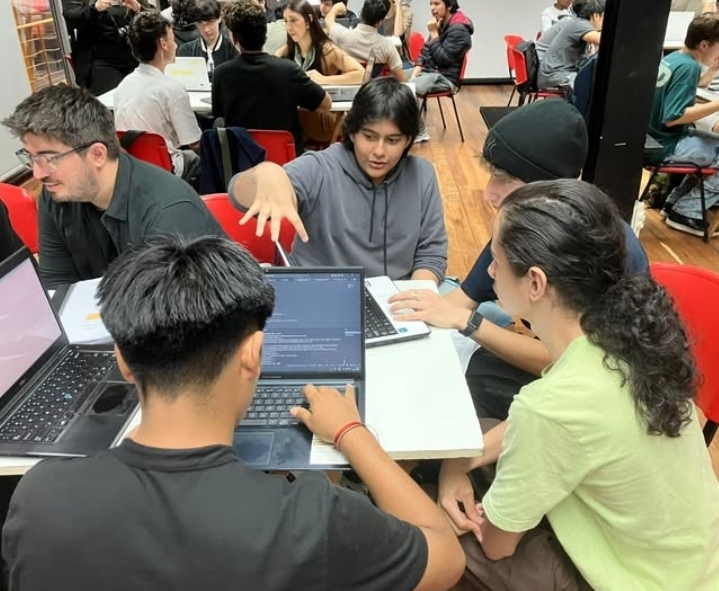
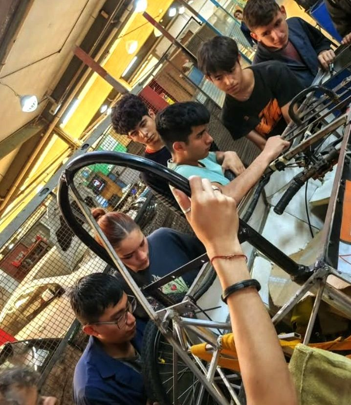

COMPUTACIÓN
El área de computación es la más amplia de la escuela, contando con cursos en los 3 turnos de la escuela. Tiene su propio piso, dentro del cual hay 4 laboratorios equipados, más dos carritos con computadoras portátiles.
En la actualidad el perfil del Técnico en Computación se van actualizado del plan original en función de las innovaciones que se producen en los campos tecnológicos y ocupacionales. Las innovaciones mayores fueron realizadas en la programación de contenidos de las distintas asignaturas. Esta estrategia de innovación tuvo como efecto que cada establecimiento definiera la pertinencia de ciertos contenidos sobre otros en función de cada proyecto institucional particular. No obstante, el conjunto de materias correspondientes a la especialidad son comunes para las áreas de computación de todas las escuelas técnicas de C.A.B.A.
Resumiendo lo que establece la resolución, el Técnico en Computación está capacitado para manifestar conocimientos, habilidades, destrezas, valores y actitudes en situaciones reales de trabajo, conforme a criterios de profesionalidad propios de su área y de responsabilidad social al:
PLAN DE ESTUDIOS - CUARTO AÑO



Título
Descripción detallada del proyecto...